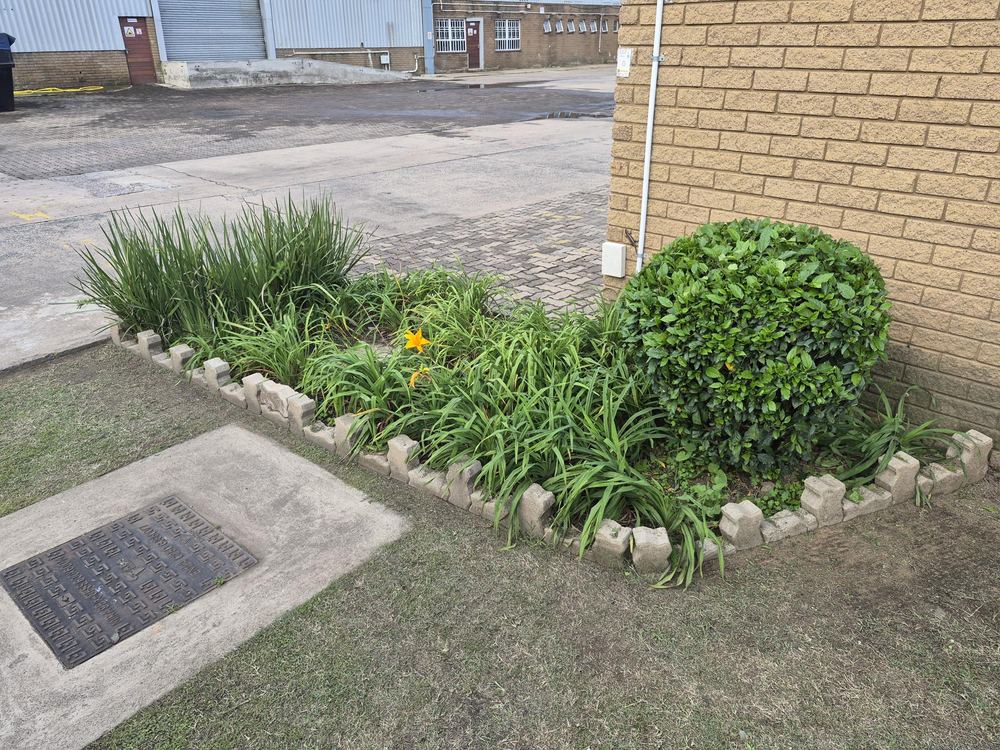

See the potential.
Every outdoor space has its own character. Start with what makes it special.
DURBAN GARDENING · ESTABLISHED 2023
Gardening services in Durban.
A little care. A greener place to call home.

ABOUT US
Established in 2023, Vital Force Landscaping offers gardening services in Durban, with care and attention for your outdoor space.
From the first impression to the quieter corners, a garden can change how a place feels. That possibility is at the heart of Vital Force.
THE VITAL FORCE APPROACH
Every outdoor space has its own character. Start with what makes it special.
Thoughtful planting, balance and care make the whole space feel considered.
A beautiful outdoors is a place to pause, gather and enjoy the everyday.
VITAL FORCE LANDSCAPING
Tell us about your garden and how we can help.
Gardening services · Durban